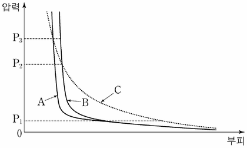

반데르발스 상태 방정식
지문을 먼저 읽고, 이해가 막히는 문단에서 ‘그림으로 보기’를 누르세요. 그림은 문단을 따라 바뀝니다.
1문단기체의 온도를 일정하게 하고 부피를 줄이면 압력은 높아진다. 한편 압력을 일정하게 유지할 때 온도를 높이면 부피는 증가한다. 이와 같이 기체의 상태에 영향을 미치는 압력(P), 온도(T), 부피(V)의 상관관계를 1몰*의 기체에 대해 표현하면 P=RT/V(R: 기체 상수)가 되는데, 이를 ㉠이상 기체 상태 방정식이라 한다. 여기서 이상 기체란 분자 자체의 부피와 분자 간 상호 작용이 없다고 가정한 기체이다. 이 식은 기체에서 세 변수 사이에 발생하는 상관관계를 간명하게 설명할 수 있다.
2문단하지만 실제 기체에 이상 기체 상태 방정식을 적용하면 잘 맞지 않는다. 실제 기체에는 분자 자체의 부피와 분자 간의 상호 작용이 존재하기 때문이다. 분자 간의 상호 작용은 인력과 반발력에 의해 발생하는데, 일반적인 기체 상태에서 분자 간 상호 작용은 대부분 분자 간 인력에 의해 일어난다. 온도를 높이면 기체 분자의 운동 에너지가 증가하여 인력의 영향은 줄어든다. 또한 인력은 분자 사이의 거리가 멀어지면 감소하는데, 어느 정도 이상 멀어지면 그 힘은 무시할 수 있을 정도로 약해진다. 하지만 분자들이 거의 맞닿을 정도가 되면 반발력이 급격하게 증가하여 반발력이 인력을 압도하게 된다. 이러한 반발력 때문에 실제 기체의 부피는 압력을 아무리 높이더라도 이상 기체에서 기대했던 것만큼 줄지 않는다.
3문단이제 부피가 V인 용기 안에 들어 있는 1몰의 실제 기체를 생각해 보자. 이때 분자의 자체 부피를 b라 하면 기체 분자가 운동할 수 있는 자유 이동 부피는 이상 기체에 비해 b만큼 줄어든 V−b가 된다. 한편 실제 기체는 분자 사이의 인력에 의한 상호 작용으로 분자들이 서로 끌어당기므로 이상 기체보다 압력이 낮아진다. 이때 줄어드는 압력은 기체 부피의 제곱에 반비례하는데, 이것을 비례 상수 a가 포함된 a/V²로 나타낼 수 있다. 왜냐하면 기체의 부피가 줄면 분자 간 거리도 줄어 인력이 커지기 때문이다. 즉 실제 기체의 압력은 이상 기체에 비해 a/V²만큼 줄게 된다.
4문단이와 같이 실제 기체의 분자 자체 부피와 분자 사이의 인력에 의한 압력 변화를 고려하여 이상 기체 상태 방정식을 보정하면 P=RT/(V−b)−a/V²가 된다. 이를 ㉡반데르발스 상태 방정식이라 하는데, 여기서 매개 변수 a와 b는 기체의 종류마다 다른 값을 가진다. 이 방정식은 실제 기체의 압력, 온도, 부피의 상관관계를 이상 기체 상태 방정식보다 잘 표현할 수 있게 해 주었으며, 반데르발스가 1910년 노벨상을 수상하는 계기가 되었다. 이처럼 자연현상을 정확하게 표현하기 위해 단순한 모형을 정교한 모형으로 수정해 나가는 것은 과학 연구에서 매우 중요한 절차 중의 하나이다.
5문단*1몰: 기체 분자 6.02×10²³개.
윗글을 바탕으로 <보기>에 대해 탐구할 때, 적절한 것은?
종류가 다른 실제 기체 A, B와 이상 기체 C 각 1몰에 대해, 같은 온도에서의 부피와 압력 사이의 관계를 그래프로 나타내었다.
